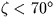
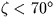
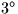
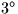

| TYPE | C*(*) | type of coordinates - `R', `H' or `A' (see below) |
|---|---|---|
| OB1 | D | observed Az, HA or RA (radians; Az is N=0, E= |
| OB2 | D | observed zenith distance or |
| DATE | D | UTC date/time (Modified Julian Date, JD-2400000.5) |
| DUT | D | |
| ELONGM | D | observer's mean longitude (radians, east +ve) |
| PHIM | D | observer's mean geodetic latitude (radians) |
| HM | D | observer's height above sea level (metres) |
| XP,YP | D | polar motion |
| TDK | D | local ambient temperature (degrees K; std=273.155D0) |
| PMB | D | local atmospheric pressure (mB; std=1013.25D0) |
| RH | D | local relative humidity (in the range 0D0-1D0) |
| WL | D | effective wavelength ( |
| TLR | D | tropospheric lapse rate (degrees K per metre, e.g. 0.0065D0) |
| RAP,DAP | D | geocentric apparent |
|---|
 for . Even
at a topocentric zenith distance of
for . Even
at a topocentric zenith distance of
 , the accuracy in elevation should be better than
1 arcminute; useful results are available for a further
, beyond which the sla_REFRO routine returns a
fixed value of the refraction. The complementary
routines sla_AOP (or sla_AOPQK) and sla_OAP (or sla_OAPQK)
are self-consistent to better than 1 microarcsecond all over
the celestial sphere.
, the accuracy in elevation should be better than
1 arcminute; useful results are available for a further
, beyond which the sla_REFRO routine returns a
fixed value of the refraction. The complementary
routines sla_AOP (or sla_AOPQK) and sla_OAP (or sla_OAPQK)
are self-consistent to better than 1 microarcsecond all over
the celestial sphere.
HM=-29.3D0*TSL*LOG(P/1013.25D0)where TSL is the approximate sea-level air temperature in degrees K (see Astrophysical Quantities, C.W.Allen, 3rd edition, §52). Similarly, if the pressure P is not known, it can be estimated from the height of the observing station, HM as follows:
P=1013.25D0*EXP(-HM/(29.3D0*TSL))Note, however, that the refraction is proportional to the pressure and that an accurate P value is important for precise work.
SLALIB --- Positional Astronomy Library